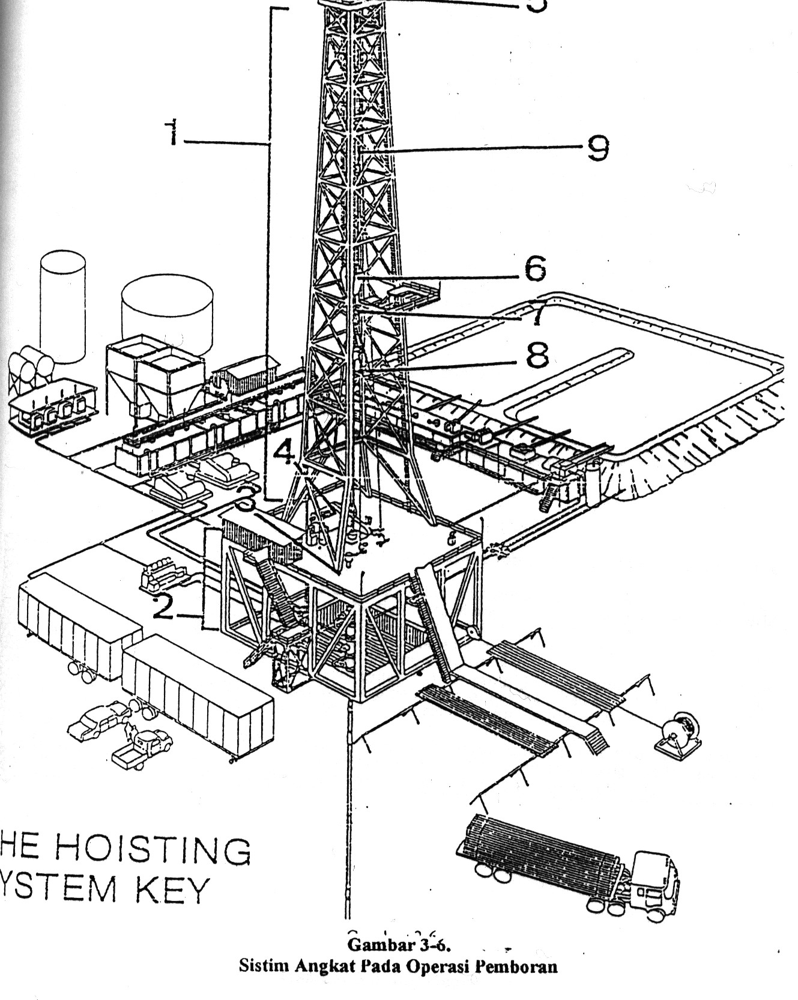
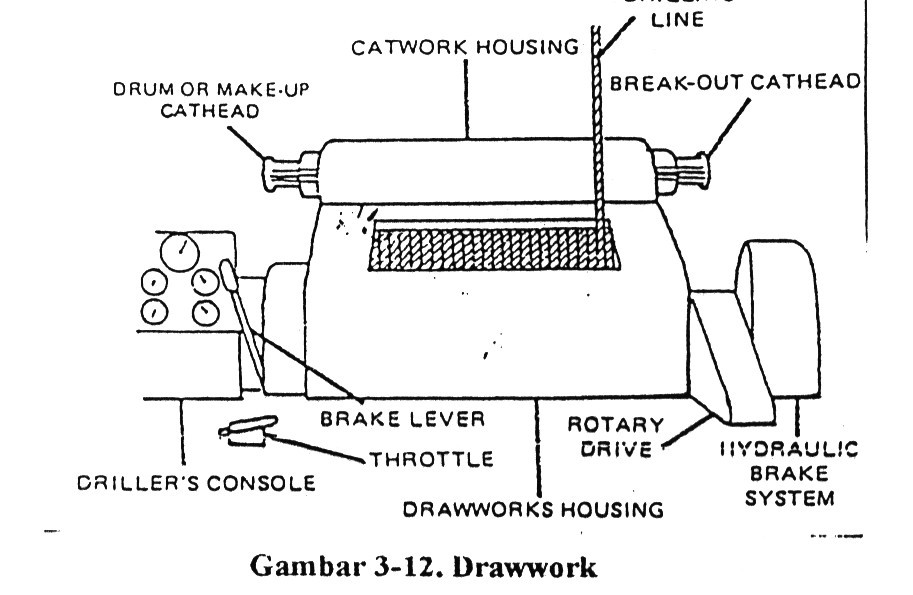
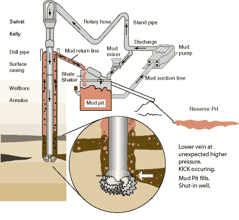
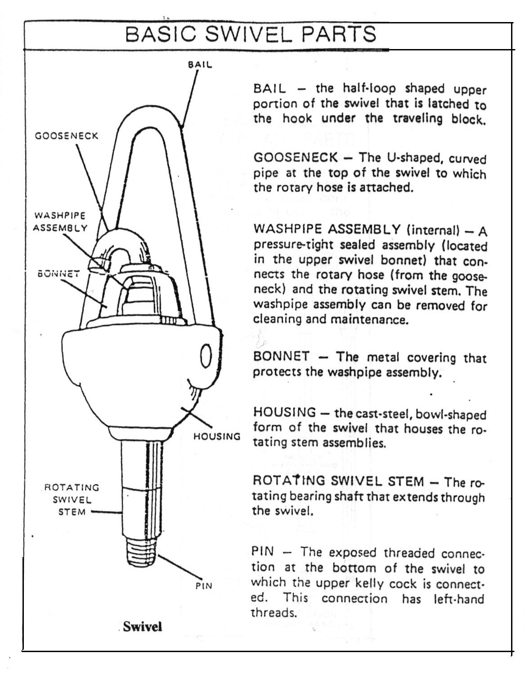
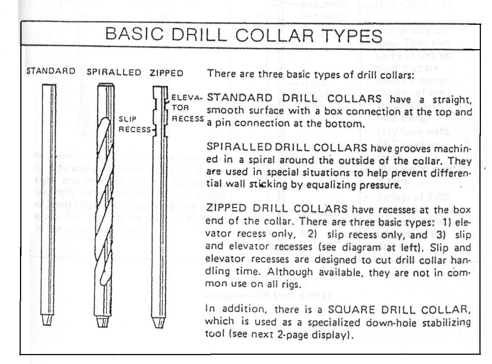

Materi Minggu Ini
- Power system: prime mover dan distribusi tenaga di rig
- Hoisting system: drawworks, block, dan wireline
- Rotary system: rotary table, top drive, dan kelly
- Rangkaian pipa bor (drill string) dan komponennya
- Perhitungan horse power drawwork
Penjelasan Materi
Rotary Drilling Unit
Operasi pemboran sistem putar modern berfungsi membuat lubang secara aman hingga menembus formasi yang berpotensi mengandung minyak/gas. Rig pemboran putar terdiri dari lima komponen utama: sistem angkat, sistem putar, sistem sirkulasi, sistem tenaga, dan sistem pencegah semburan liar.
Sistem Tenaga (Power System)
Meskipun luas areanya relatif kecil dibanding sistem lain, sistem tenaga merupakan inti dari rig bor putar modern karena menghasilkan tenaga utama untuk mengoperasikan hampir semua komponen. Tenaga dihasilkan di lokasi (on-site) melalui mesin internal combustion (prime mover), lalu ditransmisikan secara mekanik atau elektrik ke komponen-komponen yang membutuhkan.
Sistem Angkat (Hoisting System)
Sistem angkat adalah bagian rig yang paling mudah dikenali karena bentuknya seperti menara, dan berfungsi mengangkat, menurunkan, dan menahan beban besar selama operasi pemboran. Sistem ini terdiri dari dua sub-komponen:
- Struktur penyangga (rig) — kerangka baja berbentuk menara.
- Peralatan angkat — drawwork, overhead tools (crown block, travelling block, hook, elevator), dan drilling line.
Sistem Putar (Rotary System)
Berfungsi memutar rangkaian pipa bor dan memberikan beban di atas pahat (bit) untuk membuat lubang dengan ukuran dan kecepatan yang tepat. Terdiri dari tiga sub-komponen: rotary assembly (meja putar, master bushing, kelly bushing, rotary slips), drill stem, dan bit.
Rangkaian Pipa Bor (Drill String)
Rangkaian pipa bor terdiri dari swivel (ujung teratas yang memberi kebebasan berputar dan menjadi penghubung rotary hose dengan kelly), kelly, drill pipe, drill collar, BHA (drill collar, HWDP, stabilizer, sub, DHMM, NMDC, jar, gyro, MWD, LWD), hingga bit di ujung bawah.
Perhitungan Horse Power Drawwork
Horse power sistem angkat dihitung dari dua besaran: HP yang diperlukan drawwork (HPD), berdasarkan beban hook (W) dan kecepatan naik-turun travelling block (Vh); serta HP input yang harus disediakan prime mover kepada drawwork.
Gambar & Ilustrasi
Diambil langsung dari slide PPT Chapter 3.




